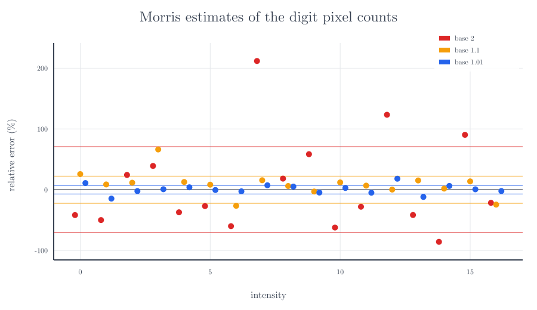
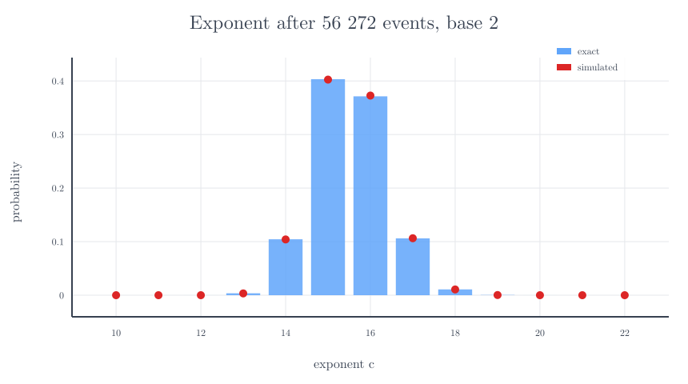
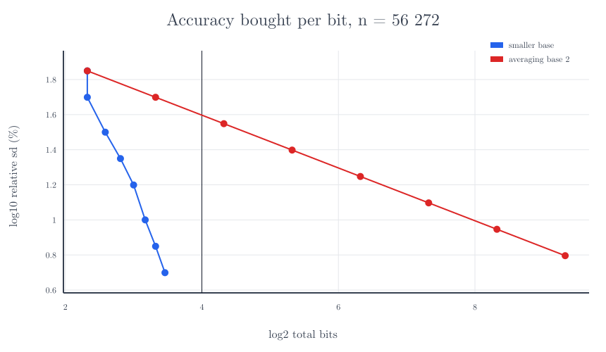

Approximate Counting: Morris's Algorithm
Abstract
Counting to \(n\) exactly takes \(\log_2 n\) bits. Morris (1978) showed how to
count in about \(\log_2\log_2 n\) bits. Store an exponent \(c\), and raise it
with probability \(a^{-c}\) at each event. We derive, from a one-step
recurrence, that the estimate \((a^c-1)/(a-1)\) is unbiased with variance
exactly \((a-1)\,n(n-1)/2\). We check both against the exact distribution of
\(c\), computed by dynamic programming. The data is the stream of 115 008 pixels
in dm::datasets::digits(), counted by intensity in 17 counters. The busiest
value, intensity 0, occurs 56 272 times. That needs a 16-bit exact counter,
while the base-2 Morris counter fits in 5 bits. Its relative error is large,
with a theoretical standard deviation of 71%. Moving the base towards 1 buys
accuracy cheaply: each halving of \(a-1\) halves the variance for about one more
bit. Averaging independent counters is far more expensive. At the same total of
10 bits, one base-1.01 counter has an error 7.1% while two base-2 counters have
50%.
The data: a stream of pixels
The digits data holds 1 797 images of \(8\times8\) pixels, each an intensity from 0 to 16. Read row by row, they form a stream of 115 008 events, and we want to know how often each intensity occurs. That calls for 17 counters, which is the setting Morris had in mind: many counters, each in a small register, where an approximate count is good enough.
#include <dm/dm.hpp>
int main() {
const auto digits = dm::datasets::digits();
std::vector<long> count(17, 0);
for (std::size_t r = 0; r < digits.nrows(); ++r)
for (int i = 0; i < 64; ++i)
++count[static_cast<int>(digits.double_at(std::format("pixel_{}", i), r))];
std::print("{} pixels in {} images.\n\n| intensity | count | bits for an exact counter |\n| ---: | ---: | ---: |\n",
64 * digits.nrows(), digits.nrows());
for (int v = 0; v < 17; ++v)
std::print("| {} | {} | {} |\n", v, count[v],
static_cast<int>(std::floor(std::log2(count[v]))) + 1);
}115008 pixels in 1797 images.
| intensity | count | bits for an exact counter |
|---|---|---|
| 0 | 56272 | 16 |
| 1 | 4095 | 12 |
| 2 | 3296 | 12 |
| 3 | 2944 | 12 |
| 4 | 3261 | 12 |
| 5 | 2803 | 12 |
| 6 | 2559 | 12 |
| 7 | 2627 | 12 |
| 8 | 3464 | 12 |
| 9 | 2585 | 12 |
| 10 | 2711 | 12 |
| 11 | 2845 | 12 |
| 12 | 3668 | 12 |
| 13 | 3509 | 12 |
| 14 | 3609 | 12 |
| 15 | 4304 | 13 |
| 16 | 10456 | 14 |
Intensity 0, the background, dominates with 56 272 pixels, and full ink (16) is next with 10 456. The other values occur 2 500 to 4 300 times each. Exact counters need 12 to 16 bits.
The method
The update
A Morris counter with base \(a>1\) keeps an integer exponent \(c\), starting at 0. On each event it sets \(c\gets c+1\) with probability \(a^{-c}\), and otherwise leaves it alone. The estimate of the number of events is
The first event always raises \(c\) to 1. After that, raising \(c\) from \(k\) to \(k+1\) takes on average \(a^k\) events. The exponent therefore grows like \(\log_a n\) and needs only \(\log_2\log_a n\) bits.
MORRIS(a):
c = 0
on each event: with probability a^(-c): c = c + 1
estimate: (a^c - 1) / (a - 1)Unbiasedness in one line
Let \(X_n=a^{c_n}\) after \(n\) events. Conditioning on the current \(c\),
So each event adds exactly \(a-1\) to \(\mathbb{E}[X]\) on average, and \(\mathbb{E}[X_n]=1+n(a-1)\). Equivalently, \(X_n-n(a-1)\) is a martingale. Hence \(\mathbb{E}[\hat n]=\mathbb{E}[(X_n-1)/(a-1)]=n\): the estimate is unbiased for every \(n\) and every base.
The exact variance
The second moment satisfies the same kind of recurrence:
Taking expectations and summing from \(X_0^2=1\),
Subtracting \((1+n(a-1))^2\) and simplifying gives \(\operatorname{Var}X_n=(a-1)^3n(n-1)/2\), so
For \(a=2\) the relative standard deviation tends to \(1/\sqrt2\approx71\%\). It does not shrink as \(n\) grows. Two remedies follow from the formula:
- averaging \(m\) independent counters divides the variance by \(m\);
- moving the base towards 1 makes the variance proportional to \(a-1\).
Counting many events at once
Feeding the counter one coin flip per event costs \(O(n)\) time even though the
state changes only about \(\log_a n\) times. At level \(c\) the number of events
until the next increment is geometric with success probability \(p=a^{-c}\). It
can be drawn directly as \(\lceil\ln U/\ln(1-p)\rceil\) for \(U\) uniform on
\((0,1]\). MorrisCounter::add(n, rng) does this, which makes it practical to
simulate counts in the millions many times over. The exponent it produces has
exactly the same distribution as \(n\) calls to increment.
Counting the digits in small registers
Each intensity gets one counter. The stream is fed one pixel at a time, in three runs with bases 2, 1.1 and 1.01.
#include <dm/dm.hpp>
namespace alg = dm::algorithms;
int main() {
std::filesystem::create_directories("build");
const auto digits = dm::datasets::digits();
std::vector<int> stream;
for (std::size_t r = 0; r < digits.nrows(); ++r)
for (int i = 0; i < 64; ++i)
stream.push_back(static_cast<int>(digits.double_at(
std::format("pixel_{}", i), r)));
std::vector<double> exact(17, 0.0);
for (int v : stream) ++exact[v];
const std::vector<std::pair<double, dm::RGB>> bases = {
{2.0, dm::RGB{220, 38, 38}}, {1.1, dm::RGB{245, 158, 11}},
{1.01, dm::RGB{37, 99, 235}}
};
std::vector<std::vector<alg::MorrisCounter>> counters;
std::mt19937_64 rng(2024);
for (const auto & [a, colour] : bases) {
counters.emplace_back(17, alg::MorrisCounter(a));
for (int v : stream) counters.back()[v].increment(rng);
}
std::print("| intensity | exact | base 2 | base 1.1 | base 1.01 |\n| ---: | ---: | ---: | ---: | ---: |\n");
for (int v = 0; v < 17; ++v)
std::print("| {} | {:.0f} | {:.0f} (c={}) | {:.0f} (c={}) | {:.0f} (c={}) |\n",
v, exact[v], counters[0][v].estimate(),
counters[0][v].exponent(), counters[1][v].estimate(),
counters[1][v].exponent(), counters[2][v].estimate(),
counters[2][v].exponent());
std::print("\n| base | register bits (largest counter) | theoretical relative sd | observed RMS relative error |\n" "| ---: | ---: | ---: | ---: |\n");
auto plot = dm::graphics::RPlot::create();
for (std::size_t b = 0; b < bases.size(); ++b) {
const double a = bases[b].first;
int bits = 0;
double sq = 0;
std::vector<double> x, y;
for (int v = 0; v < 17; ++v) {
bits = std::max(bits, counters[b][v].register_bits());
const double rel = counters[b][v].estimate() / exact[v] - 1;
sq += rel * rel;
x.push_back(v + (static_cast<double>(b) - 1) * 0.2);
y.push_back(100 * rel);
}
std::print("| {} | {} | {:.1f}% | {:.1f}% |\n", a, bits,
100 * std::sqrt((a - 1) / 2), 100 * std::sqrt(sq / 17));
plot.points(x, y, std::format("base {}", a), bases[b].second, 5.0);
plot.abline_h(100 * std::sqrt((a - 1) / 2), bases[b].second, 1.0).abline_h(-100 * std::sqrt((a - 1) / 2), bases[b].second, 1.0);
}
plot.abline_h(0, dm::RGB{17, 24, 39}, 1.0).title("Morris estimates of the digit pixel counts").x_label("intensity").y_label("relative error (%)").size(900, 520).save_svg("build/approximate_counting_digits.svg");
}| intensity | exact | base 2 | base 1.1 | base 1.01 |
|---|---|---|---|---|
| 0 | 56272 | 32767 (c=15) | 70706 (c=93) | 62407 (c=647) |
| 1 | 4095 | 2047 (c=11) | 4448 (c=64) | 3495 (c=360) |
| 2 | 3296 | 4095 (c=12) | 3674 (c=62) | 3220 (c=352) |
| 3 | 2944 | 4095 (c=12) | 4894 (c=65) | 2966 (c=344) |
| 4 | 3261 | 2047 (c=11) | 3674 (c=62) | 3389 (c=357) |
| 5 | 2803 | 2047 (c=11) | 3035 (c=60) | 2788 (c=338) |
| 6 | 2559 | 1023 (c=10) | 1881 (c=55) | 2489 (c=327) |
| 7 | 2627 | 8191 (c=13) | 3035 (c=60) | 2817 (c=339) |
| 8 | 3464 | 4095 (c=12) | 3674 (c=62) | 3641 (c=364) |
| 9 | 2585 | 4095 (c=12) | 2506 (c=58) | 2463 (c=326) |
| 10 | 2711 | 1023 (c=10) | 3035 (c=60) | 2788 (c=338) |
| 11 | 2845 | 2047 (c=11) | 3035 (c=60) | 2703 (c=335) |
| 12 | 3668 | 8191 (c=13) | 3674 (c=62) | 4330 (c=381) |
| 13 | 3509 | 2047 (c=11) | 4043 (c=63) | 3090 (c=348) |
| 14 | 3609 | 511 (c=9) | 3674 (c=62) | 3832 (c=369) |
| 15 | 4304 | 8191 (c=13) | 4894 (c=65) | 4330 (c=381) |
| 16 | 10456 | 8191 (c=13) | 7887 (c=70) | 10222 (c=466) |
| base | register bits (largest counter) | theoretical relative sd | observed RMS relative error |
|---|---|---|---|
| 2 | 4 | 70.7% | 76.0% |
| 1.1 | 7 | 22.4% | 21.3% |
| 1.01 | 10 | 7.1% | 7.7% |

The base-2 counters do what the theory says, which is not much. The 56 272 background pixels end at \(c=15\) and an estimate of 32 767, 42% low. The 2 627 pixels of intensity 7 are estimated at 8 191, more than three times too many. One step of \(c\) doubles or halves a base-2 estimate, so errors come in factors of two. The whole set of counters needs only 4 bits each, since no exponent passed 15. Base 1.1 needs 7 bits and has a typical error near 20%. Base 1.01 needs 10 bits, still well below the 12 to 16 bits of exact counters, and its RMS error is 7.7%. In each case the observed RMS relative error over the 17 counters is close to the theoretical \(\sqrt{(a-1)/2}\). Seventeen counters is a small sample, so close agreement is all that can be expected.
Checking the theory exactly
The variance formula is easy to check exactly. morris_exponent_pmf propagates
the distribution of \(c\) through all \(n\) events by dynamic programming: at
each event, mass at level \(k\) moves to \(k+1\) with probability \(a^{-k}\). We
do this for the background count \(n=56\,272\) at base 2. From the distribution
we compute the mean and variance of \(\hat n\) and compare them with the
formulas. We also compare the distribution with 20 000 simulated counters that
use the fast add.
#include <dm/dm.hpp>
namespace alg = dm::algorithms;
int main() {
std::filesystem::create_directories("build");
const std::uint64_t n = 56272;
std::print("| base | quantity | exact distribution | closed form | 20 000 simulations |\n" "| ---: | :--- | ---: | ---: | ---: |\n");
std::vector<double> levels, exact_p, sim_p;
for (double a : {2.0, 1.1}) {
const auto pmf = alg::morris_exponent_pmf(n, a, a == 2.0 ? 40 : 200);
double mean = 0, sq = 0;
for (std::size_t c = 0; c < pmf.size(); ++c) {
const double est =
(std::pow(a, static_cast<double>(c)) - 1) / (a - 1);
mean += pmf[c] * est;
sq += pmf[c] * est * est;
}
std::mt19937_64 rng(99);
std::vector<double> sims;
std::vector<double> freq(pmf.size(), 0.0);
for (int r = 0; r < 20000; ++r) {
alg::MorrisCounter mc(a);
mc.add(n, rng);
sims.push_back(mc.estimate());
freq[static_cast<std::size_t>(mc.exponent())] += 1.0 / 20000;
}
const double sm =
std::accumulate(sims.begin(), sims.end(), 0.0) / sims.size();
double sv = 0;
for (double s : sims) sv += (s - sm) * (s - sm);
sv /= sims.size() - 1;
std::print("| {} | mean of estimate | {:.1f} | {} | {:.1f} |\n", a,
mean, n, sm);
std::print("| {} | sd of estimate | {:.1f} | {:.1f} | {:.1f} |\n", a,
std::sqrt(sq - mean * mean),
std::sqrt(alg::morris_variance(n, a)), std::sqrt(sv));
if (a == 2.0)
for (std::size_t c = 10; c <= 22; ++c) {
levels.push_back(c);
exact_p.push_back(pmf[c]);
sim_p.push_back(freq[c]);
}
}
dm::graphics::RPlot::create().bars(levels, exact_p, "exact",
dm::RGB{96, 165, 250}).points(
levels, sim_p, "simulated", dm::RGB{220, 38, 38}, 5.0).title(
"Exponent after 56 272 events, base 2").x_label("exponent c").y_label(
"probability").size(860, 480).save_svg("build/approximate_counting_pmf.svg");
}| base | quantity | exact distribution | closed form | 20 000 simulations |
|---|---|---|---|---|
| 2 | mean of estimate | 56272.0 | 56272 | 56248.1 |
| 2 | sd of estimate | 39790.0 | 39790.0 | 39268.8 |
| 1.1 | mean of estimate | 56272.0 | 56272 | 56413.4 |
| 1.1 | sd of estimate | 12582.7 | 12582.7 | 12732.4 |

The mean and standard deviation from the exact distribution equal the closed forms to the printed precision: 56 272 and 39 790 for base 2, and 12 582.7 for base 1.1. The simulations agree within their sampling error. The estimate's distribution is heavily skewed, so 20 000 replicates pin down its standard deviation only to about a percent. The exact exponent is almost always 14 to 17, so the base-2 estimate is almost always one of 16 383, 32 767, 65 535 or 131 071. Unbiasedness comes from rare large values balancing frequent small ones, not from estimates near the truth.
Spending bits: smaller base or more counters?
Both remedies cost memory. A counter that must reach \(n\) needs \(\lceil\log_2(c_{\max}+1)\rceil\) bits, where we take \(c_{\max}\) as the 99.9% quantile of the exponent from the exact distribution. One counter with base \(a\) has relative standard deviation \(\sqrt{(a-1)(n-1)/2n}\). Averaging \(m\) base-2 counters costs \(m\) registers and divides the standard deviation by \(\sqrt m\). The block tabulates both for \(n=56\,272\).
#include <dm/dm.hpp>
namespace alg = dm::algorithms;
int main() {
std::filesystem::create_directories("build");
const std::uint64_t n = 56272;
auto bits_for = [&](double a) {
const auto pmf = alg::morris_exponent_pmf(n, a, 2000);
double cum = 0;
std::size_t c = 0;
while (c + 1 < pmf.size() && cum + pmf[c] < 0.999) cum += pmf[c++];
return static_cast<int>(std::floor(std::log2(c))) + 1;
};
const int b2 = bits_for(2.0);
std::print("| base a | bits | relative sd | | base-2 counters averaged | bits | relative sd |\n" "| ---: | ---: | ---: | :--- | ---: | ---: | ---: |\n");
std::vector<double> xb, yb, xm, ym;
const std::vector<double> bases = {2.0, 1.5, 1.2, 1.1, 1.05, 1.02, 1.01,
1.005};
for (std::size_t i = 0; i < bases.size(); ++i) {
const double a = bases[i];
const int bits = bits_for(a);
const double sd = std::sqrt(alg::morris_variance(n, a)) / n;
const int m = 1 << i;
const double sdm = std::sqrt(alg::morris_variance(n, 2.0) / m) / n;
std::print("| {} | {} | {:.1f}% | | {} | {} | {:.1f}% |\n", a, bits,
100 * sd, m, m * b2, 100 * sdm);
xb.push_back(std::log2(bits));
yb.push_back(std::log10(100 * sd));
xm.push_back(std::log2(m * b2));
ym.push_back(std::log10(100 * sdm));
}
std::print("\nAn exact counter for {} needs {} bits.\n", n,
static_cast<int>(std::floor(std::log2(n))) + 1);
dm::graphics::RPlot::create().lines(xb, yb, "smaller base",
dm::RGB{37, 99, 235}, 2.0).points(
xb, yb, "", dm::RGB{37, 99, 235}, 5.0).lines(xm, ym, "averaging base 2",
dm::RGB{220, 38, 38}, 2.0).points(xm, ym, "", dm::RGB{220, 38, 38}, 5.0).abline_v(4, dm::RGB{17, 24, 39}, 1.0).title("Accuracy bought per bit, n = 56 272").x_label("log2 total bits").y_label("log10 relative sd (%)").size(860, 500).save_svg("build/approximate_counting_bits.svg");
}| base a | bits | relative sd | base-2 counters averaged | bits | relative sd | |
|---|---|---|---|---|---|---|
| 2 | 5 | 70.7% | 1 | 5 | 70.7% | |
| 1.5 | 5 | 50.0% | 2 | 10 | 50.0% | |
| 1.2 | 6 | 31.6% | 4 | 20 | 35.4% | |
| 1.1 | 7 | 22.4% | 8 | 40 | 25.0% | |
| 1.05 | 8 | 15.8% | 16 | 80 | 17.7% | |
| 1.02 | 9 | 10.0% | 32 | 160 | 12.5% | |
| 1.01 | 10 | 7.1% | 64 | 320 | 8.8% | |
| 1.005 | 11 | 5.0% | 128 | 640 | 6.2% |
An exact counter for 56272 needs 16 bits.

A smaller base wins by a wide margin. Each halving of \(a-1\) halves the variance and costs about one bit, because \(c_{\max}\approx\log_a n\) and \(\log_2\log_a n=\log_2\ln n-\log_2\ln a\), with \(\ln a\approx a-1\). Averaging must double the number of registers to halve the variance. At 10 bits, one base-1.01 counter achieves 7.1% while two base-2 counters achieve 50%. Even at base 1.005 the counter needs 11 bits, still fewer than the 16 of an exact counter. Averaging is useful when the counters must be updated independently, as in sketches and distributed systems. It is not an efficient way to buy accuracy.
Summary
- A Morris counter raises its exponent with probability \(a^{-c}\). Since \(\mathbb{E}[a^{c'}\mid c]=a^c+(a-1)\), the estimate \((a^c-1)/(a-1)\) is unbiased, and the same recurrence on \(a^{2c}\) gives the exact variance \((a-1)n(n-1)/2\).
- The exact distribution from
morris_exponent_pmfand 20 000 simulations with the geometric skip inMorrisCounter::addboth agree with the formulas. - On the digit pixel stream base-2 counters fit in 4 or 5 bits instead of 12 to 16, with errors of tens of percent and occasionally a factor of three. Base 1.01 brings the RMS error down to 7.7% in 10 bits.
- To buy accuracy, shrink the base rather than average counters. Halving \(a-1\) costs about one bit, while halving the variance by averaging doubles the memory.
#include <dm/dm.hpp>
namespace alg = dm::algorithms;
std::mt19937_64 rng(1);
alg::MorrisCounter counter(1.01); // base a: relative sd ~ sqrt((a - 1) / 2)
counter.increment(rng); // one event
counter.add(1'000'000, rng); // a million events in O(log n) time
double n_hat = counter.estimate(); // (a^c - 1) / (a - 1), unbiased
int bits = counter.register_bits();
double var = alg::morris_variance(1e6, 1.01);